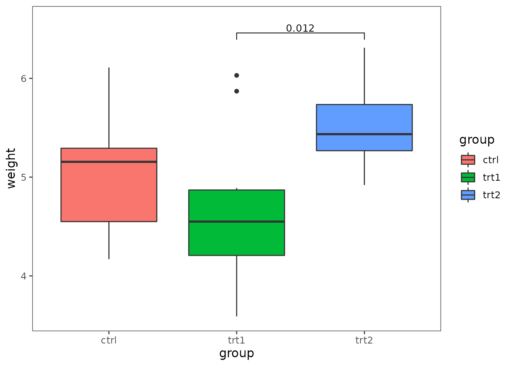
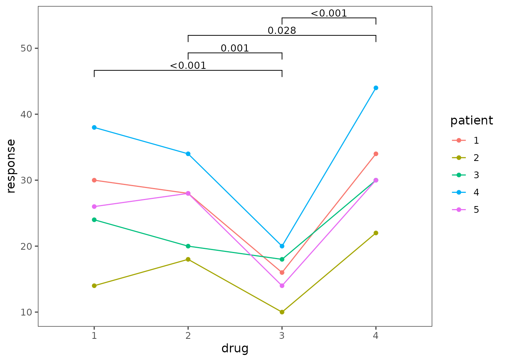
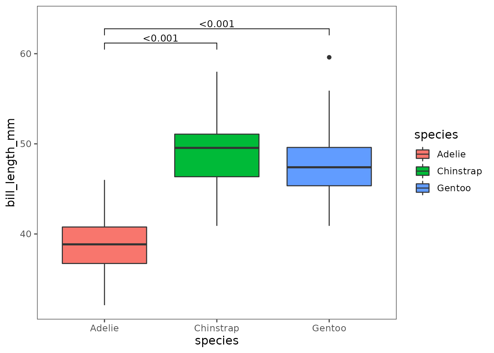
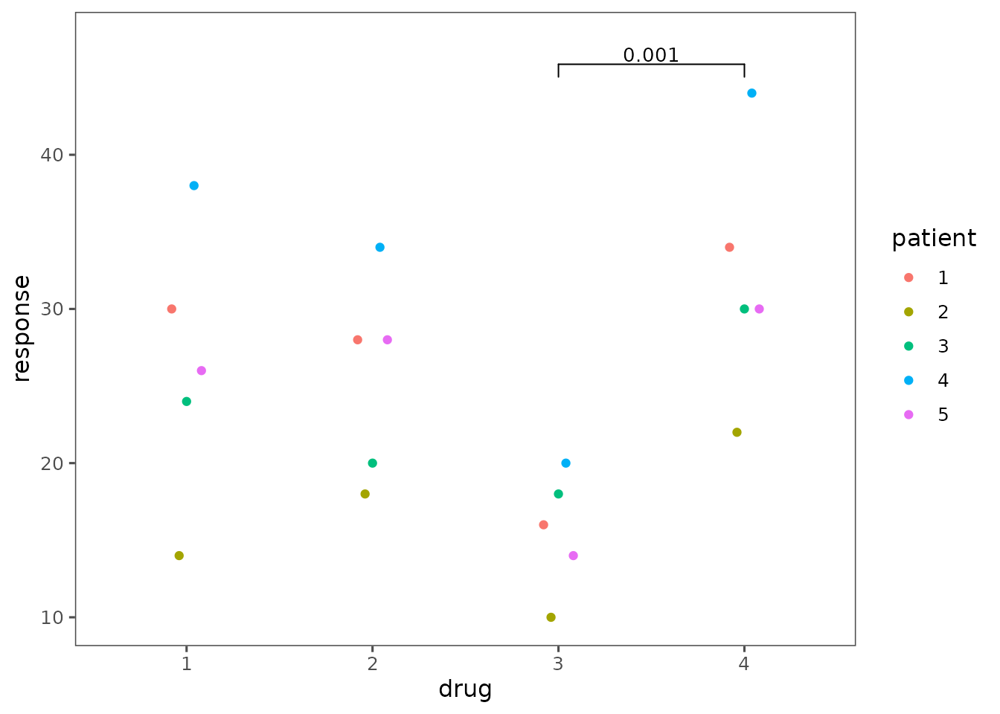
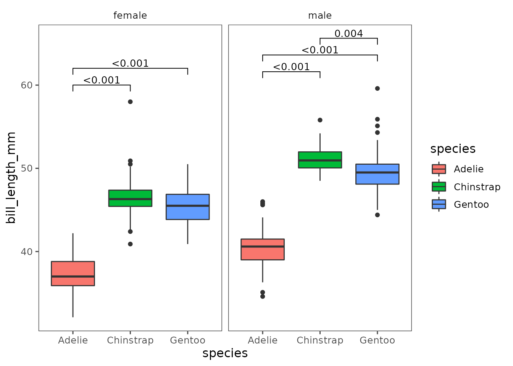

Minimal Example
This is a minimal example of how to add the statistics to a plot. In this example we use the PlantGrowth dataset.
ggplot(PlantGrowth, aes(group, weight, fill=group)) +
geom_boxplot() +
stat_kwAllPairsDunnTest(vjust = -0.2)Test types
Currently, four different tests are supported.
- Two parametric tests
-
stat_tukeyHSD()performes a TukeyHSD posthoc test on a anova. -
stat_mixedModel()creates a mixed model withlme4::lmer()usingy ~ x + (1|group).
In a second step, significanes are calcuated usinggraphics::pairs(emmeans::emmeans(model ~ x)).
-
- Two non-parametric tests
-
stat_kwAllPairsDunnTest()usesPMCMRplus::kwAllPairsDunnTest()to perform Dunn’s non-parametric all-pairs comparison test for Kruskal-type ranked data -
stat_frdAllPairsNemenyiTest()usesPMCMRplus::frdAllPairsNemenyiTest()to perform Nemenyi’s all-pairs comparisons tests of Friedman-type ranked data
-
TukeyHSD
Uses an Anova with TukeyHSD as a parametric test
ggplot(PlantGrowth, aes(group, weight, fill=group)) +
geom_boxplot() +
stat_tukeyHSD(vjust = -0.2)
Mixed model
df <- data.frame(patient=as.factor(rep(1:5, each=4)),
drug=as.factor(rep(1:4, times=5)),
response=c(30, 28, 16, 34,
14, 18, 10, 22,
24, 20, 18, 30,
38, 34, 20, 44,
26, 28, 14, 30))
ggplot(df, aes(x=drug, y=response, color=patient)) +
geom_line(aes(group = patient)) +
geom_point() +
stat_mixedModel(aes(group = patient),
vjust = -0.2,
step.increase = 0.06)
Dunn’s non-parametric all-pairs
ggplot(na.omit(palmerpenguins::penguins), aes(species, bill_length_mm, fill=species)) +
geom_boxplot() +
stat_kwAllPairsDunnTest(vjust = -.2)
Nemenyi’s all-pairs comparisons tests
df <- data.frame(patient=as.factor(rep(1:5, each=4)),
drug=as.factor(rep(1:4, times=5)),
response=c(30, 28, 16, 34,
14, 18, 10, 22,
24, 20, 18, 30,
38, 34, 20, 44,
26, 28, 14, 30))
ggplot(df, aes(x=drug, y=response, color=patient)) +
geom_point(position = position_dodge(width = .2)) +
stat_frdAllPairsNemenyiTest(aes(group = patient),
vjust = -0.2)
Change format of p-value
If wanted, the format of the p value / label can be changed. The default uses scales::pvalue. To format the p values as ‘stars’ we can. e.g. use the stars.pval function from gtools
ggplot(PlantGrowth, aes(group, weight, fill=group)) +
geom_boxplot() +
stat_kwAllPairsDunnTest(format.fun = gtools::stars.pval,
size = 15,
vjust = .3)Or you can pass a lambda function to create a custom label.
ggplot(PlantGrowth, aes(group, weight, fill=group)) +
geom_boxplot() +
stat_kwAllPairsDunnTest(format.fun = \(x) {glue::glue('my p-value {scales::pvalue(x)}')},
vjust = -.2)Facets
All functions calculate the statistics for each panel of the plot individually and can easily be used with facets.
ggplot(na.omit(palmerpenguins::penguins), aes(species, bill_length_mm, fill=species)) +
geom_boxplot() +
stat_kwAllPairsDunnTest(vjust = -.2,
step.increase = 0.06) +
facet_grid(~sex)stat_tukeyHSD works with facets too.
ggplot(na.omit(palmerpenguins::penguins), aes(species, bill_length_mm, fill=species)) +
geom_boxplot() +
stat_tukeyHSD(vjust = -.2,
step.increase = 0.06) +
facet_grid(~sex)
Further options
For further customization options please see vignette("options")